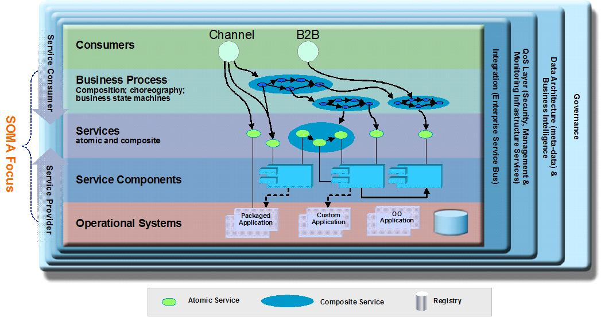

| Task: Detail SOA Solution Stack Layer |
|
 |
| Refine and provide detailed content for a specific layer of the SOA Solution Stack Reference Architecture. Instantiate the SOA ref arch by supplying instances for layers, arch building blocks, patterns, relations between layers and ABB's, arch decisions (including options available or considered). |
|
Purpose
| This is base task which will be extended for each layer specific task such as Detail SOA Stack Layer (Process Layer) etc. |
Relationships
| Inputs | Mandatory:
| Optional:
|
| Outputs |
|
Main Description
SOMA method is built keeping in view the layered architecture. The reference architecture for SOA solution
development is presented below:

Layering offers the following benefits:
-
Layers help to bring quality attributes of modifiability and portability to an IT system. A change to a lower layer
that does not affect its interface will require no change to a higher layer. For example, any J2EE™ compliant
application server that conforms to the J2EE™ standard may be freely substituted without change to
application-level software. A change to a higher layer that does not affect what facilities it requires from lower
layers will not affect any lower layer. In general, changes to a layered software system that affect no interface
are confined to a single layer.
-
Layers are part of the blueprint role that architecture plays for constructing the system. Knowing the layers in
which their software resides, developers know what services they can rely on in the coding environment. Layers may
define work assignments for development teams (although not always).
-
Layers are part of the communication role played by architecture. In a large system, the number of dependencies
among modules expands rapidly. Organizing the software into layers with interfaces is an important tool to manage
complexity and communicate the structure to developers.
-
Layers help with the analysis role played by architecture. They can be used for analyzing the impact of changes to
the design.
Layering can be strict or non-strict. A strict layering scheme means that components can only use components in the
same layer or layers immediately below them. A non-strict layering scheme means components can use components in the
same or any lower layer. Note that as a general rule, however, components should not be allowed to use components in
upper layers. If components have dependencies on components in higher layers, then it becomes difficult to replace the
upper layer components without having to change the lower layer components.
|
Steps
|
Select architectural building blocks
A layer contains a set of attributes, responsibilities, and rules associated it. Inside each layer reside a set
of “Architectural Building Blocks (ABB)”. These components of each layer are the constituent elements of that
layer that provide the functionality and deliver the responsibility assigned to that layer. They depict the “types” of
things that can reside in that specific layer. Selecting architectural building blocks include:
-
Allocating business process to Process Layer and allocating services to Service Layer during SOMA Identification
and Specification
-
Allocating components to the SOA Solution Stack Layers - Service Component Layer, Operational Layer and four cross
cutting layers namely, Integration, QoS, Data Architecture and Governance primarily during SOMA
Specification.
|
Select interaction and design patterns
A layer contains a set of attributes, responsibilities, and rules associated it. Inside each layer reside a set
of “Architectural Building Blocks (ABB)”. These components of each layer are the constituent elements of that
layer that provide the functionality and deliver the responsibility assigned to that layer. They depict the “types” of
things that can reside in that specific layer. Selecting architectural building blocks include:
-
Allocating business process to Process Layer and allocating services to Service Layer during SOMA Identification
and Specification
-
Allocating components to the SOA Solution Stack Layers - Service Component Layer, Operational Layer and four cross
cutting layers namely, Integration, QoS, Data Architecture and Governance primarily during SOMA Specification
|
Define layer options
Define a set of options available at each layer, about which Architectural decisions have to be made, that impact ABBs
that reside in the layer. The step is performed throughout SOMA Identification, Specification, and Realization.
|
Make architectural decisions
Make architectural decision for a layer concerning itself with the configuration and usage of ABBs. This step is
completed during SOMA Realization.
|
Generate or create layer executable level artifact
| Generate or create executable level artifacts for each of the layers. Each layers have different kind of executable level
artifacts e.g. BPEL for Process Layer, WSDL for Services Layer, Java or CICS code for Services Component Layer, Database
Physical Schema for Operational Layer etc.The step is performed primarily during SOMA Implementation. |
Perform unit testing
| Perform unit testing for each of the layers. The unit testing varies from layer to layer. The step is performed primarily
during SOMA Implementation. |
|
More Information
© Copyright IBM Corp. 1987, 2012 All Rights Reserved
Property of IBM
These materials are intended only for use as part of an IBM engagement |
|